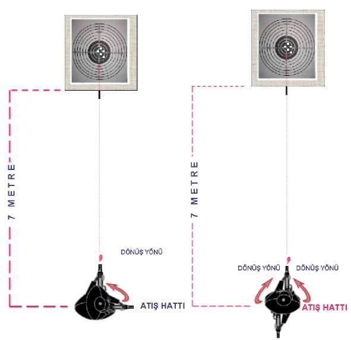

^ Özellikle MP5 makinalı tabanca ile öne doğru atış tekniği, hızlı atış
tekniklerinin temelini oluşturur Bu teknikle hızlı hedef algılamayı, hedefe konsantre olmayı, hedefin karşısındaki duruş pozisyonunu ayarlamayı, hedefe çift gözle hızlı nişan oluşturmayı ve atış esnasında bilek ile kolları kilitleme pozisyonlarını öğrenir Ayrıca değişik yönlerden çıkabilecek hedeflere karşı, vücuda ani dönüş refleksleri ve bu yönlere atış yapabilme kabiliyeti kazandırır Şekil-11.a) Dururken Öne Doğru Atış İstasyonu Şekil-11.b) Dururken Sağa Doğru Atış İstasyonu 106

BÖLÜM
İLERİ SEVİYE ATIŞ TEKNİKLERİ
Şekil-11.c) Dururken Sola Doğru
Şekil-11.d) Dururken Geriye
Atış İstasyonu
Doğru Atış İstasyonu
2.3. MP5 MAKİNALI TABANCADA ŞARJÖR DEĞİŞTİRME
VE ÇÖKEREK-AYAKTA ATIŞ TEKNİKLERİ
MP5 makinalı tabancada şarjör değiştirilirken önce aktif olarak kullandığınız elinizle silahı göz ve hedef arasına getirerek namlu yukarıyı gösterecek şekilde dik pozisyona getirin. Diğer elinizle şarjör çıkarma mandalına basarak şarjörü çıkartıp yedek şarjörünüzü şarjör yuvasına çıt sesi gelinceye kadar itin. Hızlı bir şekilde aynı elinizle silahı kurarak aktif duruma getirin. Şarjör de
ğiştirirken dikkatiniz sürekli hedefte olmalıdır. (Bakınız Resim-12.a) Bu tekniği sütre gerisinde ayakta veya oturarak (Bakınız Resim-12.b) uygulayabilirsiniz.
Sütrenin olmadığı yerlerde, hızlı şekilde hedef küçültün ve bir iki adım sağa ve sola sıçrayın. Silahı aktif olarak kullandığınız elinizin yönündeki ayağınızın topuğuna oturarak, diğer ayağınızı da öne kırık pozisyona getirin. Bunun yanında üzerine oturacağınız ayağınızı tam kırarak uzun mesafeli atışlarda öndeki kırık ayağın üstünden kol dirseğinizi destek yaparak daha rahat bir atış
pozisyonu sağlayabilirsiniz. (Bakınız Resim-14.a) Ayrıca çökme tekniği şarjör değiştirme tekniğiyle eş zamanlı yapılmalı ve teknikler uygulanırken vücut ve baş hedefe dik tutulmalıdır. (Bakınız Resim-14.a, 14.b.1, 14.b.2, 14.c.1, 14.c.2)